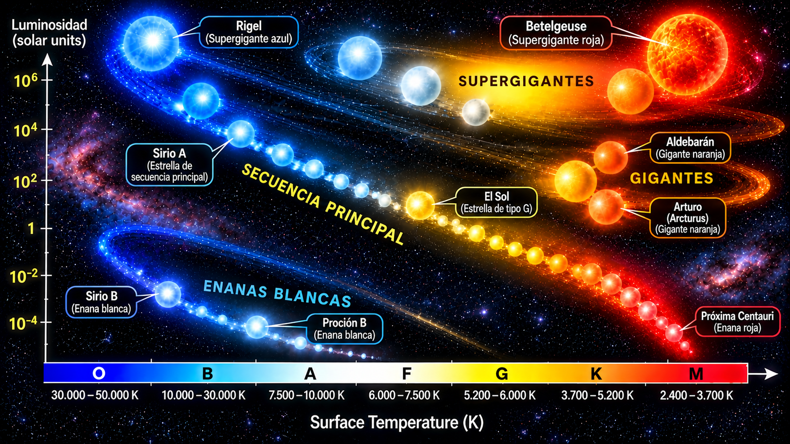
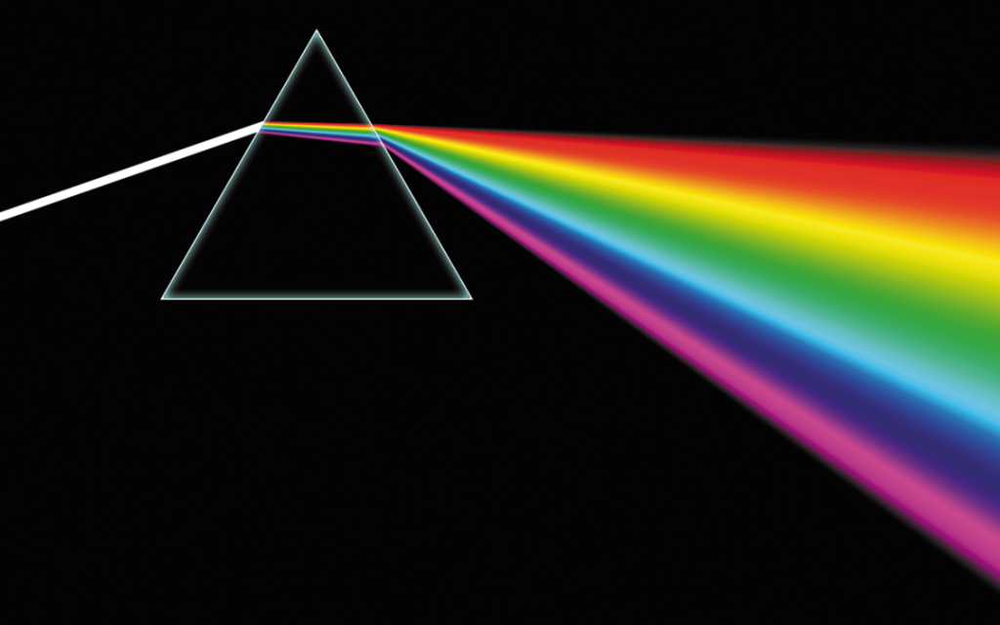
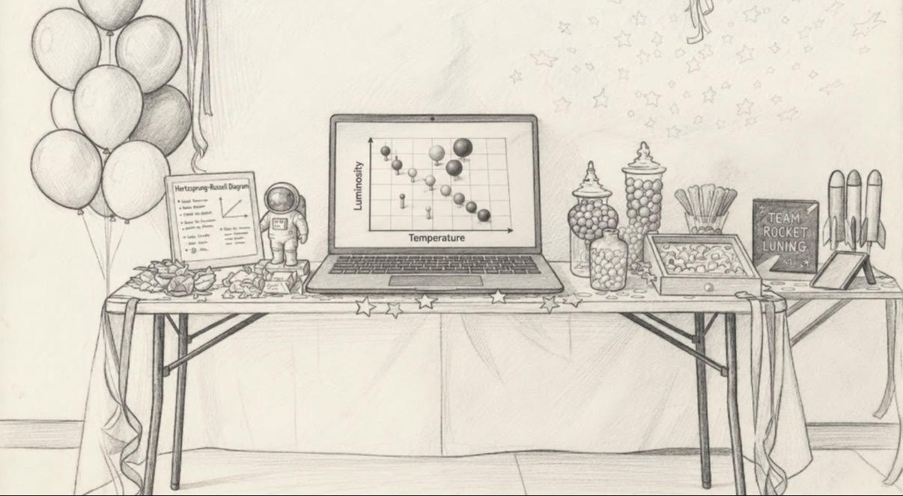

Aunque todas las estrellas parecen iguales desde la tierra, cada una tiene caracteristicas que nos cuentan una historia diferente.
Las estrellas no son todas iguales. Se pueden clasificar según características como su temperatura, color, tamaño y luminocidad.La clasificación mas utilizada es la espectral, que organiza las estrellas en 7 tipos principales: O,B,A,F,G,K y M.
Aunque las estrellas parezcan pequeños puntos de luz, cada una tiene una historia y característica diferente. Estudiarlas nos ayuda a descubrir que ocurre en el universo y a comprender mejor nuestro propio sol.
Aqui encontraras todo lo que debes saber acerca de la clasificación de estrellas.
Conocer y comprender la clasificación de estrellas, sus principales características y su importancia para el estudio del universo.
Las estrellas se forman en nebulosas, grandes nubes de gas y polvo presentes en el espacio. La gravedad concentra este material hasta formar una protoestrella. Al aumentar la temperatura y la presión en su núcleo, comienzan las reacciones de fusión nuclear. Durante la fusión, los núcleos de hidrógeno se unen para formar helio, liberando una gran cantidad de energía en forma de luz y calor. Este proceso proporciona la energía necesaria para que la estrella permanezca estable durante gran parte de su vida. Formación: Nebulosa → Protoestrella → Estrella Fusión: Hidrógeno → Helio + Energía

El ciclo de vida de una estrella depende principalmente de su masa. Después de formarse, entra en la secuencia principal, etapa en la que obtiene energía mediante la fusión del hidrógeno en su núcleo. Cuando el hidrógeno comienza a agotarse, la estrella cambia y puede convertirse en una gigante roja. A partir de este punto, su destino depende de su masa: Estrellas de menor masa: Secuencia principal → Gigante roja → Enana blanca Estrellas masivas: Secuencia principal → Supergigante → Supernova → Estrella de neutrones o agujero negro Las supernovas liberan enormes cantidades de energía y expulsan elementos al espacio, contribuyendo al enriquecimiento del medio interestelar.VARIABLES, BINARIAS, IMPACTO Y OBSERVACIÓN Las estrellas variables son aquellas cuyo brillo cambia con el tiempo, mientras que las estrellas binarias forman sistemas de dos estrellas que orbitan alrededor de un centro de masa común. Las estrellas también transforman su entorno mediante radiación y vientos estelares. Las supernovas expulsan elementos al espacio que pueden participar posteriormente en la formación de nuevas estrellas, planetas y sistemas estelares.
CIFRA
Qué significa esa cifra, en una frase.
Espectroscopia: permite analizar la composición, temperatura y movimiento de una estrella. Fotometría: permite medir y estudiar su brillo. Observación en diferentes longitudes de onda: permite obtener información que no puede verse únicamente con luz visible.

Explora cómo se relacionan el color, la temperatura y la luminosidad de las estrellas en tiempo real.
Cómo leer el diagrama: el eje horizontal representa la temperatura (disminuye de izquierda a derecha) y el vertical la luminosidad. El tamaño de la esfera es ilustrativo y cambia para ayudar a comparar los tipos estelares.
Qué encuentra el visitante.
| El experimento físico muestra | El sitio web muestra |
|---|---|
| — | — |
| — | — |
